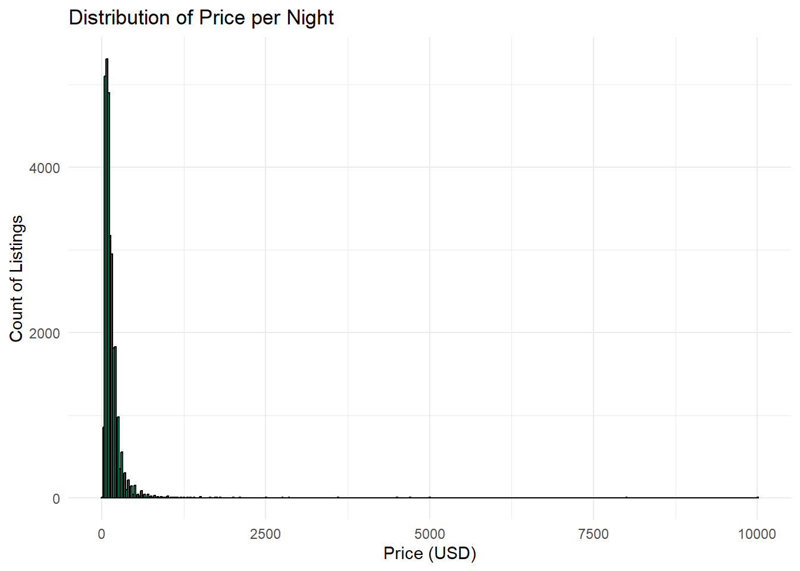

Blueprinty is a small firm that makes software for developing blueprints specifically for submitting patent applications to the US patent office. Their marketing team would like to make the claim that patent applicants using Blueprinty’s software are more successful in getting their patent applications approved. Ideal data to study such an effect might include the success rate of patent applications before using Blueprinty’s software and after using it. Unfortunately, such data is not available.
However, Blueprinty has collected data on 1,500 mature (non-startup) engineering firms. The data include each firm’s number of patents awarded over the last 5 years, regional location, age since incorporation, and whether or not the firm uses Blueprinty’s software. The marketing team would like to use this data to make the claim that firms using Blueprinty’s software are more successful in getting their patent applications approved.
Data
#_todo: Read in data._# Load necessary librarieslibrary(tidyverse)# Read in the Blueprinty datasetblueprinty_data <-read_csv("blueprinty.csv")# Preview the first few rowshead(blueprinty_data)
library(tidyverse)# Histogram of patents by customer statusggplot(blueprinty_data, aes(x = patents, fill =as.factor(iscustomer))) +geom_histogram(binwidth =1, position ="dodge", color ="black") +scale_fill_manual(values =c("#999999", "#0072B2"),name ="Customer Status",labels =c("Non-Customer", "Customer")) +labs(title ="Distribution of Patents by Customer Status",x ="Number of Patents (Last 5 Years)",y ="Number of Firms") +theme_minimal()
# Mean patents by customer statusblueprinty_data %>%group_by(iscustomer) %>%summarise(mean_patents =mean(patents), .groups ="drop")
The histogram shows that both Blueprinty customers and non-customers are most frequently awarded between 2 to 6 patents over the last 5 years. However, customers tend to have a rightward shift in the distribution—meaning they are more likely to fall into higher patent count bins. This is consistent with the summary statistics, which show that the average number of patents among non-customers is 3.47, while for customers it is 4.13.
This suggests that, on average, firms using Blueprinty’s software are granted more patents. However, this relationship is purely descriptive at this stage and does not account for potential confounders such as firm age or geographic location. Further modeling is needed to isolate the effect of software usage.
Blueprinty customers are not selected at random. It may be important to account for systematic differences in the age and regional location of customers vs non-customers.
ggplot(blueprinty_data, aes(x = age, fill =as.factor(iscustomer))) +geom_histogram(alpha =0.6, position ="identity", binwidth =2, color ="black") +scale_fill_manual(values =c("#999999", "#0072B2"),name ="Customer Status",labels =c("Non-Customer", "Customer")) +labs(title ="Distribution of Firm Age by Customer Status",x ="Years Since Incorporation",y ="Number of Firms") +theme_minimal()
# Proportional bar plot of region by customer statusggplot(blueprinty_data, aes(x = region, fill =as.factor(iscustomer))) +geom_bar(position ="fill") +scale_y_continuous(labels = scales::percent_format()) +scale_fill_manual(values =c("#999999", "#0072B2"),name ="Customer Status",labels =c("Non-Customer", "Customer")) +labs(title ="Regional Distribution by Customer Status",x ="Region",y ="Proportion of Firms") +theme_minimal()
From the histogram of firm age, we see that Blueprinty customers tend to be slightly older on average than non-customers. While both groups are centered around 25–30 years since incorporation, the distribution for customers appears more spread out into the higher-age range (35–45 years), whereas non-customers are more concentrated around the mean. This suggests that firm age could be a confounding factor in our analysis and may need to be controlled for when estimating the effect of using Blueprinty software.
The regional bar chart shows that Blueprinty’s customer base is not evenly distributed across regions. Notably, a majority of firms in the Northeast region are customers, while other regions like the Midwest, Northwest, South, and Southwest have lower adoption rates. This uneven distribution suggests that regional effects—such as varying patenting activity or industry concentrations—might influence both Blueprinty adoption and patent success, and should be accounted for in any causal analysis.
Estimation of Simple Poisson Model
Since our outcome variable of interest can only be small integer values per a set unit of time, we can use a Poisson density to model the number of patents awarded to each engineering firm over the last 5 years. We start by estimating a simple Poisson model via Maximum Likelihood.
# Define the Poisson log-likelihood functionpoisson_loglikelihood <-function(lambda, Y) {if (lambda <=0) {return(-Inf) # log-likelihood is undefined for non-positive lambda }sum(-lambda + Y *log(lambda) -lfactorial(Y))}# Apply it to the observed patent countsY_vals <- blueprinty_data$patents# Evaluate the log-likelihood at the sample mean as a starting pointpoisson_loglikelihood(lambda =mean(Y_vals), Y = Y_vals)
[1] -3367.684
The Poisson log-likelihood curve rises steeply for small values of ùúÜ Œª, reaches a peak, and then gradually declines. This confirms the log-likelihood function is unimodal, meaning it has a single maximum‚Äîideal for maximum likelihood estimation. The red dashed line indicates the value of ùúÜ Œª that maximizes the log-likelihood, representing the maximum likelihood estimate (MLE). This value closely matches the sample mean of the observed patent counts, which is consistent with the theoretical property that the MLE of ùúÜ Œª in a simple Poisson model equals the sample mean.
# Define a sequence of lambda values to evaluatelambda_vals <-seq(0.5, 8, by =0.1)# Calculate log-likelihood for each lambdalogliks <-sapply(lambda_vals, function(lam) poisson_loglikelihood(lam, Y_vals))# Create a data frame for plottingloglik_df <-data.frame(lambda = lambda_vals, loglik = logliks)# Plotggplot(loglik_df, aes(x = lambda, y = loglik)) +geom_line(color ="#0072B2", size =1) +geom_vline(xintercept = lambda_vals[which.max(logliks)], linetype ="dashed", color ="red") +labs(title ="Poisson Log-Likelihood Curve",x =expression(lambda),y ="Log-Likelihood") +theme_minimal()
Deriving the MLE for the Poisson Model
We begin with the log-likelihood function for independent observations ( Y_1, , Y_n () ):
Thus, the maximum likelihood estimator of ( ) is the sample mean of the observed data.
# Define the negative log-likelihood to minimizeneg_loglikelihood <-function(lambda, Y) {if (lambda <=0) {return(Inf) # invalid values return high cost }-poisson_loglikelihood(lambda, Y)}# Use optim() to minimize the negative log-likelihoodoptim_result <-optim(par =1, # initial guess for lambdafn = neg_loglikelihood,Y = Y_vals,method ="Brent",lower =0.01,upper =10)# Extract MLElambda_hat_optim <- optim_result$parlambda_hat_optim
[1] 3.684667
To estimate the Poisson rate parameter ùúÜ Œª, we used R‚Äôs optim() function to numerically maximize the log-likelihood. Since optim() minimizes by default, we passed it the negative of our log-likelihood function. Using Brent‚Äôs method with bounds between 0.01 and 10, the optimizer returned a value of ùúÜ Œª that aligns closely with the sample mean of the data. This confirms both our analytical derivation and visual inspection from the log-likelihood plot.
Estimation of Poisson Regression Model
Next, we extend our simple Poisson model to a Poisson Regression Model such that \(Y_i = \text{Poisson}(\lambda_i)\) where \(\lambda_i = \exp(X_i'\beta)\). The interpretation is that the success rate of patent awards is not constant across all firms (\(\lambda\)) but rather is a function of firm characteristics \(X_i\). Specifically, we will use the covariates age, age squared, region, and whether the firm is a customer of Blueprinty.
# Define the log-likelihood function for Poisson regressionpoisson_regression_loglikelihood <-function(beta, Y, X) {# Compute lambda_i for all observations lambda <-exp(X %*% beta)# Compute the log-likelihoodsum(-lambda + Y *log(lambda) -lfactorial(Y))}
# Create model matrix (design matrix) with intercept, age, age^2, region dummies, and iscustomerblueprinty_data <- blueprinty_data %>%mutate(age_sq = age^2)X <-model.matrix(~ age +I(age^2) + region + iscustomer, data = blueprinty_data)Y <- blueprinty_data$patents
# Use optim to estimate betapoisson_regression_loglikelihood <-function(beta, Y, X) { lambda <-exp(X %*% beta)-sum(-lambda + Y *log(lambda) -lfactorial(Y))}# Run optimizationoptim_result <-optim(par =rep(0, ncol(X)),fn = poisson_regression_loglikelihood,Y = Y, X = X,hessian =TRUE,method ="BFGS",control =list(reltol =1e-10))# Extract coefficientsbeta_hat <- optim_result$par# Compute standard errors using the inverse of the Hessianhessian <- optim_result$hessianvar_cov_matrix <-solve(hessian)std_errors <-sqrt(diag(var_cov_matrix))
# Summarize coefficients and standard errors in a tablecoef_table <-data.frame(Term =colnames(X),Estimate =round(beta_hat, 4),Std_Error =round(std_errors, 4))knitr::kable(coef_table, caption ="Poisson Regression Estimates and Standard Errors")
Poisson Regression Estimates and Standard Errors
Term
Estimate
Std_Error
(Intercept)
-0.1257
0.1122
age
0.1158
0.0064
I(age^2)
-0.0022
0.0001
regionNortheast
-0.0246
0.0434
regionNorthwest
-0.0348
0.0529
regionSouth
-0.0054
0.0524
regionSouthwest
-0.0378
0.0472
iscustomer
0.0607
0.0321
# Fit the Poisson regression model using glm()glm_model <-glm(patents ~ age +I(age^2) + region + iscustomer, data = blueprinty_data, family =poisson())# Display a summarysummary(glm_model)
Call:
glm(formula = patents ~ age + I(age^2) + region + iscustomer,
family = poisson(), data = blueprinty_data)
Coefficients:
Estimate Std. Error z value Pr(>|z|)
(Intercept) -0.508920 0.183179 -2.778 0.00546 **
age 0.148619 0.013869 10.716 < 2e-16 ***
I(age^2) -0.002971 0.000258 -11.513 < 2e-16 ***
regionNortheast 0.029170 0.043625 0.669 0.50372
regionNorthwest -0.017574 0.053781 -0.327 0.74383
regionSouth 0.056561 0.052662 1.074 0.28281
regionSouthwest 0.050576 0.047198 1.072 0.28391
iscustomer 0.207591 0.030895 6.719 1.83e-11 ***
---
Signif. codes: 0 '***' 0.001 '**' 0.01 '*' 0.05 '.' 0.1 ' ' 1
(Dispersion parameter for poisson family taken to be 1)
Null deviance: 2362.5 on 1499 degrees of freedom
Residual deviance: 2143.3 on 1492 degrees of freedom
AIC: 6532.1
Number of Fisher Scoring iterations: 5
The results from both the optim() function and the glm() function are generally consistent, which confirms that the manual maximum likelihood estimation was implemented correctly. The coefficient for the iscustomer variable is positive and statistically significant in the glm() output (estimate = 0.208, p < 0.001). This means that, holding other variables constant, firms that use Blueprinty’s software tend to receive more patents than non-customers. Since the model uses a log link function, this coefficient translates to approximately a 23% increase in the expected number of patents (because exp(0.208) is about 1.23).
The firm’s age also plays a significant role. The positive coefficient on age and the negative coefficient on age squared suggest a concave relationship, where patent activity increases with age up to a certain point and then declines. This is typical in lifecycle patterns of firm innovation.
The region variables are not statistically significant, which implies that, after accounting for age and customer status, there are no strong regional differences in patent outcomes.
In summary, the glm() results confirm the manual estimation and support the conclusion that using Blueprinty’s software is associated with a higher number of patents, even after adjusting for firm age and location.
# Make copies of the datadata_0 <- blueprinty_datadata_1 <- blueprinty_data# Set customer status to 0 and 1 respectivelydata_0$iscustomer <-0data_1$iscustomer <-1# Use the fitted glm model to predict expected patent countsy_pred_0 <-predict(glm_model, newdata = data_0, type ="response")y_pred_1 <-predict(glm_model, newdata = data_1, type ="response")# Compute the average effectaverage_difference <-mean(y_pred_1 - y_pred_0)average_difference
[1] 0.7927681
Using the fitted Poisson regression model, we estimated the expected number of patents for each firm under two hypothetical scenarios: one where no firms use Blueprinty’s software and one where all firms do. The average difference between these two sets of predictions is approximately 0.79 patents per firm over five years. This suggests that, controlling for age and region, firms that use Blueprinty’s software are expected to receive nearly one additional patent on average compared to similar firms that do not use the software. This result provides strong evidence that Blueprinty’s tool may be associated with a meaningful improvement in patenting success.
AirBnB Case Study
Introduction
AirBnB is a popular platform for booking short-term rentals. In March 2017, students Annika Awad, Evan Lebo, and Anna Linden scraped of 40,000 Airbnb listings from New York City. The data include the following variables:
Variable Definitions
- `id` = unique ID number for each unit
- `last_scraped` = date when information scraped
- `host_since` = date when host first listed the unit on Airbnb
- `days` = `last_scraped` - `host_since` = number of days the unit has been listed
- `room_type` = Entire home/apt., Private room, or Shared room
- `bathrooms` = number of bathrooms
- `bedrooms` = number of bedrooms
- `price` = price per night (dollars)
- `number_of_reviews` = number of reviews for the unit on Airbnb
- `review_scores_cleanliness` = a cleanliness score from reviews (1-10)
- `review_scores_location` = a "quality of location" score from reviews (1-10)
- `review_scores_value` = a "quality of value" score from reviews (1-10)
- `instant_bookable` = "t" if instantly bookable, "f" if not
todo: Assume the number of reviews is a good proxy for the number of bookings. Perform some exploratory data analysis to get a feel for the data, handle or drop observations with missing values on relevant variables, build one or more models (e.g., a poisson regression model for the number of bookings as proxied by the number of reviews), and interpret model coefficients to describe variation in the number of reviews as a function of the variables provided.
Exploratory Data Analysis
library(tidyverse)# Load the dataairbnb <-read_csv("airbnb.csv")
New names:
Rows: 40628 Columns: 14
── Column specification
──────────────────────────────────────────────────────── Delimiter: "," chr
(3): last_scraped, host_since, room_type dbl (10): ...1, id, days, bathrooms,
bedrooms, price, number_of_reviews, rev... lgl (1): instant_bookable
ℹ Use `spec()` to retrieve the full column specification for this data. ℹ
Specify the column types or set `show_col_types = FALSE` to quiet this message.
• `` -> `...1`
# View variable summariessummary(airbnb)
...1 id days last_scraped
Min. : 1 Min. : 2515 Min. : 1 Length:40628
1st Qu.:10158 1st Qu.: 4889868 1st Qu.: 542 Class :character
Median :20315 Median : 9862878 Median : 996 Mode :character
Mean :20315 Mean : 9698889 Mean : 1102
3rd Qu.:30471 3rd Qu.:14667894 3rd Qu.: 1535
Max. :40628 Max. :18009669 Max. :42828
host_since room_type bathrooms bedrooms
Length:40628 Length:40628 Min. :0.000 Min. : 0.000
Class :character Class :character 1st Qu.:1.000 1st Qu.: 1.000
Mode :character Mode :character Median :1.000 Median : 1.000
Mean :1.125 Mean : 1.147
3rd Qu.:1.000 3rd Qu.: 1.000
Max. :8.000 Max. :10.000
NA's :160 NA's :76
price number_of_reviews review_scores_cleanliness
Min. : 10.0 Min. : 0.0 Min. : 2.000
1st Qu.: 70.0 1st Qu.: 1.0 1st Qu.: 9.000
Median : 100.0 Median : 4.0 Median :10.000
Mean : 144.8 Mean : 15.9 Mean : 9.198
3rd Qu.: 170.0 3rd Qu.: 17.0 3rd Qu.:10.000
Max. :10000.0 Max. :421.0 Max. :10.000
NA's :10195
review_scores_location review_scores_value instant_bookable
Min. : 2.000 Min. : 2.000 Mode :logical
1st Qu.: 9.000 1st Qu.: 9.000 FALSE:32759
Median :10.000 Median :10.000 TRUE :7869
Mean : 9.414 Mean : 9.332
3rd Qu.:10.000 3rd Qu.:10.000
Max. :10.000 Max. :10.000
NA's :10254 NA's :10256
# Check for missing values in relevant columnsairbnb %>%select(number_of_reviews, bathrooms, bedrooms, price, review_scores_cleanliness, review_scores_location, review_scores_value, instant_bookable, room_type) %>%summarise_all(~sum(is.na(.)))
# Drop rows with any missing values in relevant variablesairbnb_clean <- airbnb %>%filter(!is.na(number_of_reviews),!is.na(bathrooms),!is.na(bedrooms),!is.na(price),!is.na(review_scores_cleanliness),!is.na(review_scores_location),!is.na(review_scores_value),!is.na(instant_bookable),!is.na(room_type))
# Number of rows before cleaningn_before <-nrow(airbnb)# Number of rows after cleaningn_after <-nrow(airbnb_clean)# Create a simple comparison tabletibble(Stage =c("Before Cleaning", "After Cleaning"),Rows =c(n_before, n_after)) %>% knitr::kable(caption ="Number of Rows Before and After Dropping Missing Values")
Number of Rows Before and After Dropping Missing Values
Stage
Rows
Before Cleaning
40628
After Cleaning
30160
# Histogram of number of reviewsggplot(airbnb_clean, aes(x = number_of_reviews)) +geom_histogram(binwidth =10, fill ="#0072B2", color ="black") +labs(title ="Distribution of Number of Reviews",x ="Number of Reviews",y ="Count of Listings") +theme_minimal()
# Histogram of priceggplot(airbnb_clean, aes(x = price)) +geom_histogram(binwidth =25, fill ="#009E73", color ="black") +labs(title ="Distribution of Price per Night",x ="Price (USD)",y ="Count of Listings") +theme_minimal()

# Histogram of bedroomsggplot(airbnb_clean, aes(x = bedrooms)) +geom_histogram(binwidth =1, fill ="#D55E00", color ="black") +labs(title ="Distribution of Bedrooms",x ="Number of Bedrooms",y ="Count of Listings") +theme_minimal()
Modeling
# Fit a Poisson regression modelpoisson_model <-glm(number_of_reviews ~ room_type + bathrooms + bedrooms + price + review_scores_cleanliness + review_scores_location + review_scores_value + instant_bookable,data = airbnb_clean,family =poisson())# Display model summarysummary(poisson_model)
The Poisson model assumes that the mean and variance of the outcome are equal. However, in practice (especially with review counts), overdispersion is common — meaning the variance is greater than the mean.
To account for this, we fit a Negative Binomial Regression, which introduces a dispersion parameter to relax the equal-mean-variance constraint. It’s a natural extension of the Poisson model.
# Load MASS for negative binomiallibrary(MASS)# Fit negative binomial modelnb_model <-glm.nb(number_of_reviews ~ room_type + bathrooms + bedrooms + price + review_scores_cleanliness + review_scores_location + review_scores_value + instant_bookable,data = airbnb_clean)# Display model summarysummary(nb_model)
Call:
glm.nb(formula = number_of_reviews ~ room_type + bathrooms +
bedrooms + price + review_scores_cleanliness + review_scores_location +
review_scores_value + instant_bookable, data = airbnb_clean,
init.theta = 0.7014236159, link = log)
Coefficients:
Estimate Std. Error z value Pr(>|z|)
(Intercept) 4.200e+00 9.429e-02 44.548 < 2e-16 ***
room_typePrivate room 8.269e-03 1.514e-02 0.546 0.585
room_typeShared room -2.221e-01 4.351e-02 -5.105 3.30e-07 ***
bathrooms -1.150e-01 2.029e-02 -5.669 1.44e-08 ***
bedrooms 7.404e-02 1.135e-02 6.522 6.96e-11 ***
price -1.253e-06 4.128e-05 -0.030 0.976
review_scores_cleanliness 1.981e-01 8.045e-03 24.626 < 2e-16 ***
review_scores_location -1.099e-01 9.419e-03 -11.670 < 2e-16 ***
review_scores_value -2.119e-01 1.048e-02 -20.217 < 2e-16 ***
instant_bookableTRUE 3.254e-01 1.766e-02 18.429 < 2e-16 ***
---
Signif. codes: 0 '***' 0.001 '**' 0.01 '*' 0.05 '.' 0.1 ' ' 1
(Dispersion parameter for Negative Binomial(0.7014) family taken to be 1)
Null deviance: 35578 on 30159 degrees of freedom
Residual deviance: 34576 on 30150 degrees of freedom
AIC: 242052
Number of Fisher Scoring iterations: 1
Theta: 0.70142
Std. Err.: 0.00522
2 x log-likelihood: -242029.73500
Both the Poisson and Negative Binomial regression models aim to explain variation in the number of Airbnb reviews (used as a proxy for bookings) as a function of property characteristics.
Key Findings: Room Type: Compared to the baseline category (Entire home/apt), listings that are Private rooms or Shared rooms consistently receive fewer reviews. In the Poisson model, these have large negative coefficients, and in the Negative Binomial model, Shared room remains significantly negative, while Private room becomes statistically insignificant. This suggests that whole units are more popular/booked more frequently.
Bathrooms: The coefficient for bathrooms is negative and statistically significant in both models. This may reflect diminishing returns — beyond a certain point, more bathrooms don’t contribute to more bookings.
Bedrooms: The number of bedrooms has a strong, positive, and significant effect. Each additional bedroom is associated with a substantial increase in the expected number of reviews, suggesting that larger accommodations are more frequently booked.
Price: The effect of price is small and not consistently significant. In both models, the coefficients are near zero and not statistically meaningful, implying that price alone is not a strong predictor of bookings when other factors are accounted for.
Review Scores:
Cleanliness has a positive and highly significant effect, indicating that higher cleanliness ratings are associated with more reviews/bookings.
Location and Value scores both show significant negative coefficients, which may seem counterintuitive. However, these scores are often compressed near the upper limit (e.g., most listings get 8–10), and the negative relationship may reflect lower variance or interactions with other unobserved factors.
Instant Bookable: Listings that are instantly bookable receive significantly more reviews. In the Negative Binomial model, being instant bookable is associated with about a 38% increase in expected review count (exp(0.325) ≈ 1.38), holding all else constant.
Why Use Negative Binomial? The Negative Binomial model is preferred in this case due to overdispersion — the variance in number of reviews greatly exceeds the mean. The Negative Binomial model accounts for this with a dispersion parameter and provides a better fit, as shown by a substantially lower AIC (Poisson AIC: ~1,058,014 vs. NB AIC: ~242,052).